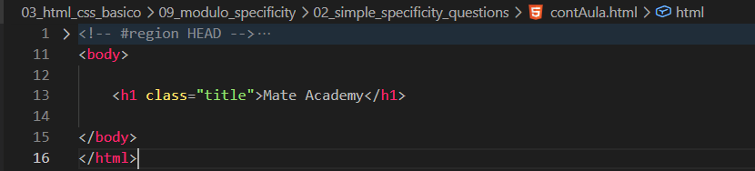
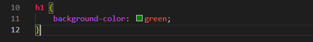

Simple Specificity Questions
Intro
Aqui iremos ver a especificidade na pratica.
Aqui iremos ver a especificidade na pratica.
HTML:

CSS:

Com base em nosso código de exemplo, se criarmos outra modificação para o h1, mesmo já existindo uma anterior, a última poderá se sobrepor, caso ambas tenham a mesma especificidade.
O resultado nesse caso e diferente, mesmo se a tag estiver por ultimo, o resultado ainda sera aquele que for modificado com a class.